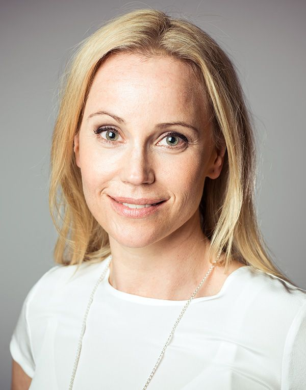
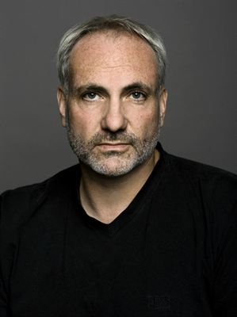
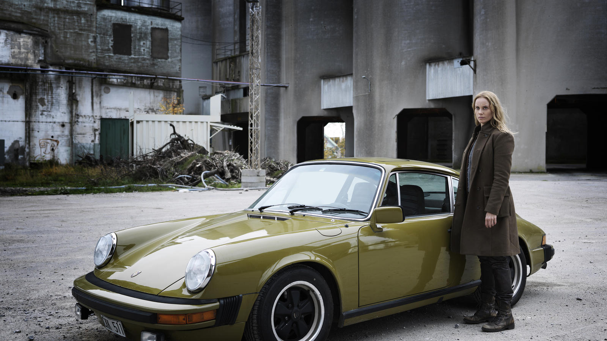

Bron
 

Bakgrund

TV-serien Bron är en samproduktion mellan Sverige och Danmark. Film i Skåne har vait med och producerat denna serie som är en av de största internationella succéerna nordisk TV-produktion någonsin haft. Serien har varit med och skapat Nordic Noir eller Scandicrime, tillsammans med några andra serier, exempelvis Wallander, Borgen och The Killing.
Hans Rosenfeldt har skrivit manus till serien. Han har samarbetat med Måns Mårlind och Björn Stein, som har hjälpt till med idéer till handlingen. Serien producerades på svenska sidan av Anders Landström via Filmlance International och Bo Erhardt på Nimbus Film i Danmark.
Serien skapades i fyra säsonger med totalt 38 avsnitt. I varje avsnitt var en mängd bild_i_texter involverade, både lokalt och i själva produktionen - ca 80 personer i filmteamet och 100 skådespelare. Utöver detta var det mängder av statister i varje avsnitt.
Internationellt genombrott

I både USA och Storbrittanien skapade Bron de högsta tittarsiffrorna de haft för serier som inte är engelskspråkiga. Efter att den första säsongen sänts i Sverige, började serien att spridas i världen. 135 länder hade redan köpt serien när säsong 2 började spelas in.
Totalt har över 188 länder har sänt Bron. Serien har även fått många priser i Sverige och Danmark, men även internationella priser.
Turism
Huvuddelen av serien är inspelad i och omkring Malmö och Köpenhamn. Det stora genomslaget serien haft har genererat mycket fokus på dessa städer och skapat många turistbesök när fans kommit för att själva besöka dessa platser. För att möta den turism-våg serien skapat har Visit Skåne skapat en guide till flera inspelningsplatser från serien.
Varför namnet Bron?
Serien startar när en död kropp hittas mitt på bron, en halv kropp i Sverige och en halv kropp i Danmark. Denna scen är inspelad på bron, när den var avstängd för servicearbete. Saga, en av huruvrollskaraktärerna, far fram och tillbaka över bron i sin Porsche 911 från 70-talet.
Tillbaka till toppen på sidan